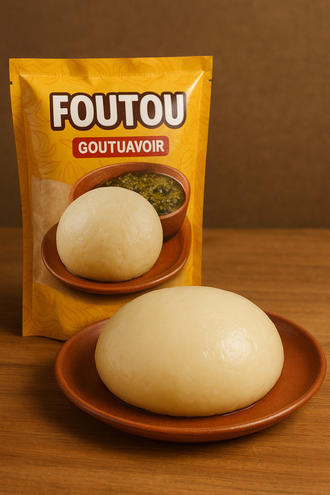

Foutou
Plongez dans l’univers savoureux du Foutou, un mets emblématique de la cuisine ivoirienne qui allie tradition et gourmandise.
Préparé avec soin à partir de soit de bananes plantains et de manioc finement pilés, soit de l'igname, ou soit le Taro, il offre une texture onctueuse et un goût délicatement sucré qui sublime chaque repas.
Avec le Foutou, chaque bouchée est une invitation à célébrer l’authenticité et la richesse des saveurs africaines.
Ajoutez-le à votre menu et laissez-vous séduire par son goût irrésistible !
 Foutou de Banane
Foutou de BananePlaintain 500g
 Foutou d'Igname
Foutou d'Igname 500g
 Foutou de Manioc
Foutou de Manioc 500g
 Foutou de Taro
Foutou de Taro 500g